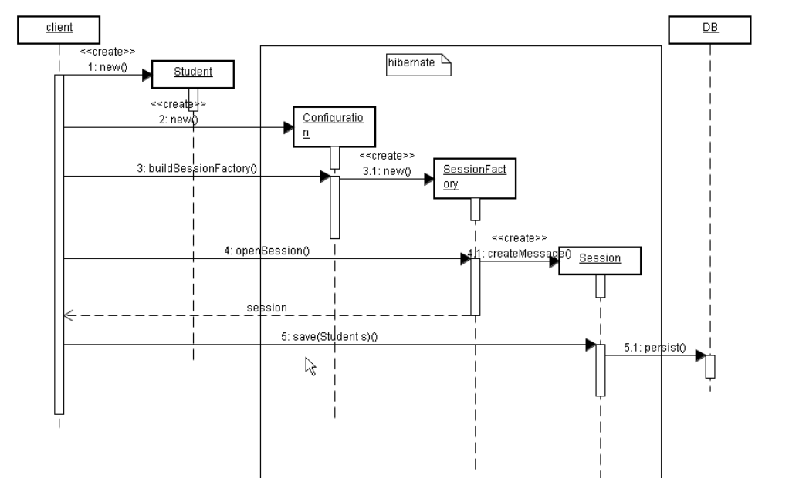
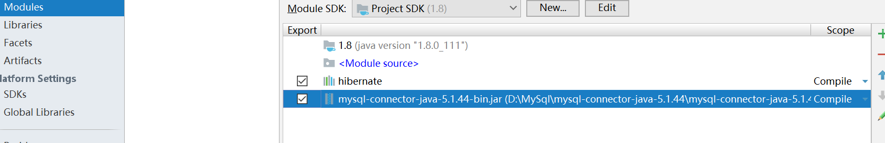
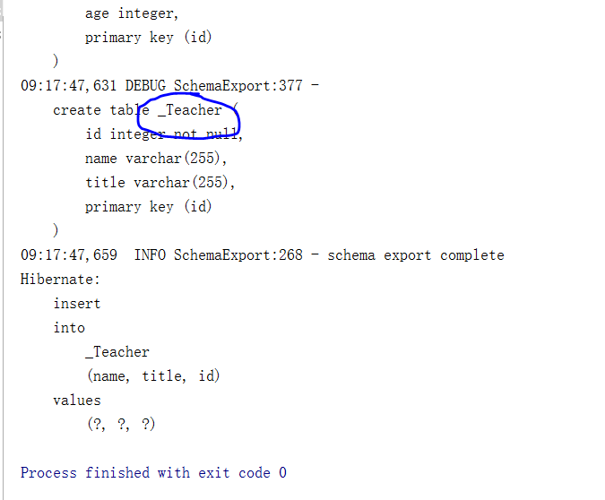
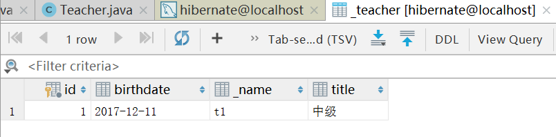
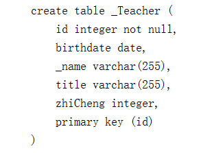

Hibernate内容：
- HelloWorld
a) xml
b) annotation - Hibernate原理模拟 - 什么是 O/RMapping以及为什么要有O/RMapping
- 常见的O/R框架
- Hibernate基础配置
- Hibernate核心接口介绍
- 对象的三种状态
- ID生成策略
- 关系映射
- Hibernate查询(HQL)
- 在Struts基础上继续完善BBS2009
- 性能优化
- 补充话题
第一课. Hibernate初印象.
S2SH整合以后的整体框架
Spring会将service注入到Action里面去，Spring还会将DAO注入到service里面。
hibernate架构：

风格：
- 先脉络，后细节
- 先操作，后原理
- 重Annotation,轻xml配置文件
a) JPA
b) hibernate – extension
Hibernate准备：
这是视频上给出的一个官网说明，原先我们是要看Matrix来看Hibernate Core、Annotations和EntityManager哪个版本对应哪个版本，然后挨个下载，不过在Hibernate3.5.x以后，就不要这么做了，只需要把整个包都下载下来，里面是已经搭配好的。但是当时视频出来的时候，3.5.X还处于beta版本，不稳定，所以视频里面下载的是Hibernate Core 3.3.2，查询矩阵表：
查到对应的Annotation是3.4.x,所以最后下载的是3.3.2 GA的Core和3.4.0 GA的Annotation。因为没有用到EntityManager，所以先不需要下载。
hibernate下载地址：
http://hibernate.org/orm/releases/
现在已经到了5.2版本了。
最后我们需要把记录日志的包slf4jl.5.8也下载下来。
另外我们需要特别注意两个说明文档：
- hibernate zh_CN文档
- hibernate annotation references
第二节. HelloWorld
本节来创建一个Hibernate版本的HelloWorld。
先创建一个最简单的Java工程叫hibernate_0100_HelloWorld，然后在这个工程里面创建一个library叫做hibernate，向hibernate这个library里面添加jar包：
被圈中的都是我们要添加的jar包，然后我们看到添加的jar包中有一个slf4j-api-1.5.8，但其实那个只是相当于一个声明，具体的实现我们还需要添加下面的jar包：
这样的library才是完整的比较原始的hibernate资料包。
当然为了能和mysql数据库连接，我们还需要添加JAVA和数据库连接的jar包：
然后把两个都添加配置到工程里来：

在mysql中创建我们的数据库并创建表：
这样就创建了一个hibernate数据库，并且在里面创建了一个student表。
在src下创建配置文件hibernate.cfg.xml，内容直接将
hibernate-distribution-3.3.2.GA/documentation/manual/zh-CN/html_single
这个文档里的 Hibernate配置 粘贴过来进行修改就可以：
现在有了Student类，也有了数据库，那怎么能把这二者关联起来呢？
由于我们前面的数据库中id号没有设置为主键，所以我们删了重新创建一下表：
这样id就成了主键。
由于上面的配置文件中最后一句是<mapping resource="com/bjsxt/hibernate/model/Student.hbm.xml"/>
所以我们的配置文件就定义在model下，命名叫Student.hbm.xml：
这样就将我们的Student和数据库中的Student表关联起来，分别将id、name和age字段也关联起来了。
然后我们在src下做一个测试类，用来将Student里的数据通过Hibernate存储到mysql里面（）：
效果：
发现Sql被成功生成并显示在控制台。
查询数据库：
成功！
查看文档：
发现HibernateUtil类是一系列辅助使用的方法集合，我们前面用到了buildFactory()方法，里面的getSessionFactory()是一个单例模式，所以我们调用的时候直接使用类.方法()的方式就可以了，而且之创建一个session工厂，因为我们没有必要每一次都创建一个新的。
第三课. Annotation版本的HelloWorld
上一节我们使用传统的Hibernate的xml方法来创建一个HelloWorld项目，这次我们用更简单的Annotation方式来创建。
引入支持Annotation的jar包：
这样就支持Annotation语法了。
创建一个Teacher表：
创建一个Teacher类：
其中
@Entity : 对实体注释。任何Hibernate映射对象都要有这个注释
@Id: 声明此属性为主键。
接下来不需要去配置hbm.xml，而是直接去配置hibernate.cfg.xml，在原来代码基础上添加一句即可：
这样就直接去Teacher这个model中，通过注解来找映射关系。
在src目录下创建一个TeacherTest测试类，注意里面的cfg，这次是通过AnnotationConfiguration()来创建的：
我们来测试一下：
发现可以成功插入一条数据！
第六课. Hibernate模拟实现
What is and Why O/R Mapping
- JDBC操作数据库很繁琐
- Sql语句编写并不是面向对象的
- 可以在对象和关系表之间建立关联来简化编程
- O/R Mapping 简化编程
- O/R Mapping跨越数据库平台
这节我们来，模拟一下Hibernate的具体实现过程，就是将我们的对model的操作翻译成sql语句。
创建一个表：create table _student(_id int primary key, _name varchar(20), _age int);
Session.java：
|
|
这里面主要涉及到了反射机制，在之前的博客有相关介绍。
在StudentTest.java里面使用这个Session：
运行一下：
没问题，和我们的hibernate运行效果是一致的，都将拼出来的sql语句显示在控制台上面。数据库中也成功插入了s数据：
其实Hibernate内部实现并不是使用反射的，这一段我们理解就可以了。
第八课. 常见OR框架简介
- hibernate
- toplink
- jdo
- ibatis
- JPA（意愿一统天下）
第九课. Hibernate总结与提纲
Hibernate基础配置
- 对应项目：Hibernate_0300_BasicConfiguration
- 介绍MSQL的图形化客户端
- hibernate.cfg.xml: hbni2ddl.auto
a) 先建表还是先建实体类 - 搭建日志环境并配置显示DDL语句
a) slf4j与log4j的关系：slf4j像是一个大管家，可以管理许多的日志框架，log4j是其中之一
b) 加入slf4j-log4j.jar,加入 log4j 的 jar 包,去掉 slf4-nop.jar
c) 从hibernate/project/etc 目录 copy log4j.properties
d) 査询hibernate文裆，日志部分，调整日志的输出策略 - 搭建jUnit环境
a) 需要注意jUnit的Bug - hibernate.cfg.xml：show_sql
hibernate.cfg.xml：format_sql
12<!-- 格式化显示输出sql --><property name="format_sql">true</property>表名和类名不同,对表名进行配置
a) Annotation: @Table
b) xml:自己査询- 字段名和属性相同
a) 不用写@column 与默认的@Basic效果一样
b) Xml中不用写 column - 字段名和属性名不同
a) Annotation: @Column
b) xml:自己査询 - 不需要psersistence的字段(不用列)
a) Annotation：@Transient
b) xml不写 - 映射日期与时间类型，指定时间精度
a) Annotation：@Temporal(参数) 参数有3种 只显示时间,只显示日期,时间日期都显示123//@Temporal(TemporalType.DATE) 只显示日期//@Temporal(TemporalType.TIME) 只显示时间//@Temporal(TemporalType.TIMESTAMP) 显示日期与时间
b) xml:指定 type
- 映射枚举类型( 比较少用)
a) @Enumerated12@Enumerated(EnumType.ORDINAL) 枚举类型按位置数,如:0,1,2 ...存储@Enumerated(EnumType.STRING) 枚举类型按设定值存储
b) xml:麻烦
- 字段映射的位置（field或者get方法）
a) best practice：保持 field(变量定义) 和 get set 方法的一致 - @Lob
- 课外：CLOBBLOB类型的数据存取
- 课外：Hibernate自定义数据类型
- hibernate 类型
第十课. MySQL客户端介绍.
下载一个破解版的MySQL图形化界面，我们这里推荐使用navicat for mysql，下载地址：
http://www.jb51.net/database/552026.html#download
第十一课. hbm2ddl
hibernate.hbm2ddl.auto参数的作用主要用于：自动创建|更新|验证数据库表结构。如果不是此方面的需求建议set value="none"。
- create：
每次加载hibernate时都会删除上一次的生成的表，然后根据你的model类再重新来生成新表，哪怕两次没有任何改变也要这样执行，这就是导致数据库表数据丢失的一个重要原因。 - create-drop ：
每次加载hibernate时根据model类生成表，但是sessionFactory一关闭,表就自动删除。 - update：
最常用的属性，第一次加载hibernate时根据model类会自动建立起表的结构（前提是先建立好数据库），以后加载hibernate时根据 model类自动更新表结构，即使表结构改变了但表中的行仍然存在不会删除以前的行。要注意的是当部署到服务器后，表结构是不会被马上建立起来的，是要等 应用第一次运行起来后才会。 - validate ：
每次加载hibernate时，验证创建数据库表结构，只会和数据库中的表进行比较，不会创建新表，但是会插入新值。
第十二课. 先建表还是先建类.
先建表，后建类
第十三课. 搭建Log4J日志环境
本节的主要目标是搭建日志环境并配置显示DDL语句
slf技术架构：
我们可以将slf转化成任意一种日志形式。
为了将slf转化成log4j我们需要在library中删除slf4j-nop的jar包，添加log4j的jar包和slf4j-log4j的jar包：
这样相当于就在slf4j和log4j之间加了一个转接器，这是一种适配器模式。
我们在hibernate.cfg.xml中加入下面的配置：
对表先删后创建，含义参考上一节内容。
我们再加入log4j.properties配置文件：
将其他显示配置都屏蔽掉，只显示hbm2ddl的日志信息。
我们运行程序，查看我们的控制台：
成功！
第十四课. 搭建Junit日志环境.
上一节中我们的日志还只是在运行main方法的情况下进行显示的，本节我们将搭建Junit日志环境。
我们下载junit-4.7.jar，并添加到项目中：
然后单独做成一个library，添加到项目中
这样就支持了junit。
我们模仿maven的做法，在src下创建一个test目录，在这个目录下创建一个和自己要测试文件一样的路径：
在这个文件下，把之前写的TeacherTest完全剪切过来，做一点小小修改，在main方法上加一个@Test：
这样就可以直接在testTeacherSave方法上做单元测试了。
第十五课. showsql_formatsql
我们运行单元测试，发现控制台将日志完整的输出出来：
重点观察里面的sql语句，sql语句被正常显示出来，这是由于我们在hibernate.cfg.xml中对sql显示进行过设置：
如果设置成false，就不会将最后得到的sql显示。
我们参考文档，还可以通过配置来讲sql显示得更加漂亮一些，就是格式化sql输出：
第十六课. hibernate基础配置
类名与表名不一致，但是想把类映射到不同名的表中：
这样我们执行后就可以在控制台看到：

说明_Teacher被成功创建并且Teacher也被映射过去。
如果不采用注解方式，使用xml也可以做(Student.hbm.xml)：
如果写类的时候，字段上面没有写注解，那么就相当于写了@Basic
如果属性名与字段名不一样，那么可以使用@Column注解的：
看一下数据库：
发现name属性被成功映射到_name字段了。
如果有些属性，我们不想让外界知道，也就是说，在建表的时候不建立对应字段，该怎么做？
这里采用@Transient注解就可以了：
我们运行，看看数据库：
还是三个字段，yourWifeName没有被加入进来。
日期类型：
我们在Teacher类中加入下面的属性：private Date birthdate;
那么在生成数据库的时候们就会生成一个datetime类型的字段：
我们测试一下，在TeacherTest里加入一句：
运行后查看数据库：
没问题。
如果我们只想让birthdate显示为一个日期，而不是那么精确的时间，可以采用@Temporal(TemporalType.DATE)
这样的注解：
运行一下：

发现birthdate只显示了一个日期。
对于枚举类型Enum，注解的处理方式非常简单：
先创建一个名字叫ZhiCheng的枚举类：
在Teacher.java中加入枚举类型变量：
这样，在ZhiCheng和数据库进行映射的时候，会转化成varchar类型：
如果我们使用：@Enumerated(EnumType.ORDINAL)
那么生成的表字段就是integer类型：

第十七课. Annotation字段映射位置
字段注解应该放在什么位置？
不应该放在字段上面，因为会破坏私有性，建议放在get方法上。
第十九课. JUnit_BeforeClass不报异常的bug处理
如果我们在hibernate.cfg.xml中将表mapping class名字写错了，那么在junit中有时候beforeclass不报错，如果不报错，那么就在beforeclass注解的语句块中加入try catch语句来捕获异常，如果这样还不行，那就只能写main方法， 里面调用@beforeclass下的函数块了。